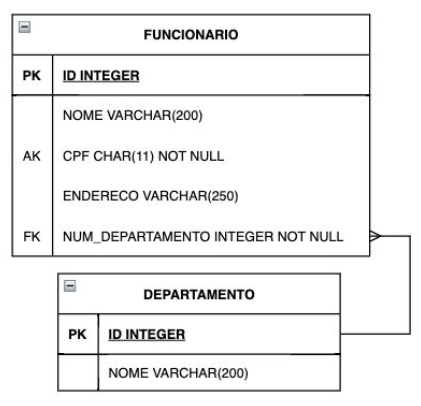
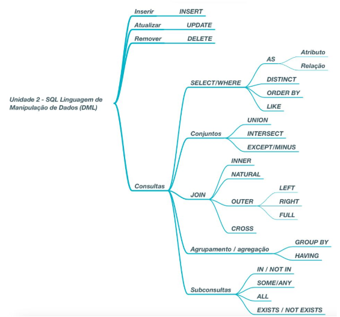
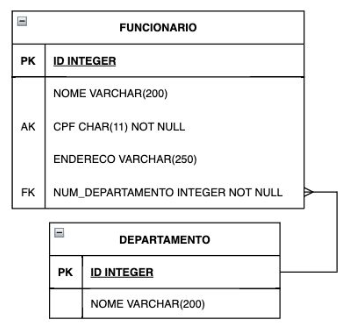

Disciplinas
-
BANCO DE DADOS-T01-2024-1 Concluído
Materiais
Vídeo 1 - [UFMS Digital] Banco de Dados - Módulo 2. sendProfessor ministrante: Vanessa Borges
Conteúdo
Definição e manipulação de dados relacionais.
- Unidade 1 - SQL Linguagem de definição de dados.
- Unidade 2 - SQL Linguagem de manipulação de dados.
- Objetivo.
- Explorar bancos de dados relacionais por meio da linguagem SQL.
Linguagem em Banco de Dados.
- É a forma de comunicação com os SGBDs
- SQL (Structured Query Language) é a linguagem padrão para SGBDs relacionais
- SQL é uma linguagem abrangente que representa uma combinação de DDL e DML
- Linguagem de definição de dados (DDL – Data Definition Language)
- Usada pelo DBA e pelo projetista de banco de dados para definir os dois esquemas (interno/físico e conceitual/lógico)
- Utilizada quando o SGBD não mantém separações entre níveis
- Linguagem de manipulação de dados (DML – Data Manipulation Language)
- Incluem recuperação, inserção, exclusão e modificação dos dados
Definição de dados relacionais.
DATABASE(Banco de dados)
|
+-----------------------+--------------------------------+
| | TABLE(Tabelas Restrições)
SCHEMA(Esquemas) TABLE(Tabelas Definição) PRIMARY KEY(Chave primária)
| | UNIQUE(Chave candidata)
| | FOREIGN KEY(Integridade referencial)
| | NULL/NOT NULL
| | CHECK
| | |
DEFINITION MATERIALIZED VIEW(Visões) INDEX (Índices)
| | |
| | |
RESTRICTIONS VIEW(Visões) INTEGRITY ()
| | REFERENTIAL ()
|
DDL (Unidade 1-SQL Linguagem de Definição de Dados)
Exemplos:
Definição de um banco de dados:
CREATE DATABASE (nome do banco de dados>;
Definição de um schema:
CREATE SCHEMA (nome do schema>;
DEFINIÇÃO de uma tabela de base:
CREATE TABLE (nome da tabela> (
atributo1 (domínio do atributo> (restrições do atributo>,
atributo2 (domínio do atributo> (restrições do atributo>,
(restrições de tabela>
);
Exemplos de DDL:
Definição de um banco de dados:
CREATE DATABASE (nome do banco de dados>;
CREATE DATABASE empresadb;
Definição de um schema:
CREATE SCHEMA (nome do schema>;
CREATE SCHEMA administracaoschema;
DEFINIÇÃO de uma tabela de base:
CREATE TABLE (nome da tabela> (
atributo1 (domínio do atributo> (restrições do atributo>,
atributo2 (domínio do atributo> (restrições do atributo>,
(restrições de tabela>
);
CREATE TABLE funcionario (
ID integer NOT NULL,
NOME varchar(100),
CPF char(11) UNIQUE NOT NULL,
NUM_DEPARTAMENTO integer,
PRIMARY KEY (ID),
FOREIGN KEY (NUM_DEPARTAMENTO) REFERENCES departamento (ID)
);

Manipulação de dados relacionais.
 Exemplos de DML:
Inserção de tuplas em uma tabela:
INSERT INTO (tabela> [((atributo1>[,..., (atributoN>])] VALUES ((valor1>[,..., (valorN>]);
INSERT INTO departamento (id, nome) VALUES (1, 'Administração');
Remoção de tuplas em uma tabela:
DELETE FROM (tabela> [WHERE (lista de condições>];
DELETE FROM funcionario WHERE num_departamento = 5;
Atualização de tuplas existentes:
UPDATE (tabela> SET (campo1>=(valor1> [,..., (campoN>=(valorN>] [WHERE (condição>];
UPDATE funcionario SET num_departamento=1 WHERE num_departamento = 5;
Consultas de tuplas em tabelas:
SELECT * | (lista de atributos e funções> FROM (lista de tabelas> [WHERE (condições>];
SELECT nome, cpf FROM funcionario WHERE num_departamento = 5;
